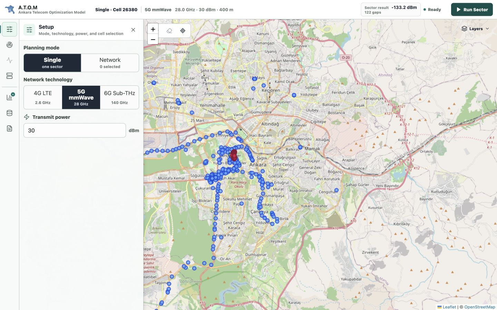

Sector propagation
Samples a directional beam with FSPL, antenna gain, building intersections, and frequency-dependent cumulative wall loss.
Rays, Rx power, range, gapsA.T.O.M is a local-first telecom planning workspace for deterministic 4G LTE, 5G mmWave, and 6G Sub-THz propagation analysis across Ankara. These docs explain how the focused workspace, Go RF engines, spatial data, interference model, and optional 5G Core path fit together.

The documentation is organized around two questions: how the system works internally, and how to get from a fresh clone to a useful RF planning result.
See component boundaries, request lifecycles, R-tree queries, worker limits, interference calculations, and 5G communication paths.
Open architecture guide → Installation and operationClone the Git LFS dataset, run Docker Compose, verify readiness, and complete sector, network, interference, and report workflows.
Open download guide →Each analysis is exposed as a distinct workflow so radio configuration, spatial evidence, and output interpretation remain connected without filling the map with permanent controls.
Samples a directional beam with FSPL, antenna gain, building intersections, and frequency-dependent cumulative wall loss.
Rays, Rx power, range, gapsSweeps sector azimuths or selected-cell plans against POI demand, residential-density demand, and an overlap-aware network score.
Before/after score and azimuthsEvaluates serving-cell selection and co-channel interference on an adaptive grid for modeled RSRP, SINR, RSRQ, and RSSI.
Quality surface and demand impactMaps selected 5G cells to gNBs and distinguishes direct Xn coordination, AMF/N2 fallback, and UPF/N3 session traffic.
Routes, functions, sessions, eventsCombines the active plan, RF evidence, interference assumptions, Core Lab state, comparisons, and map context for review.
Print/PDF and MarkdownThe application keeps the map stable while one focused tool is open. Configuration changes invalidate stale analysis, and only the latest matching request is allowed to update the workspace.
A.T.O.M is intentionally deterministic and inspectable. Its results support planning, education, and system evaluation; they do not replace calibrated propagation tools or field measurements.
Validated dataset packs are loaded into memory. Projects preserve exact requests, model versions, and dataset identity for repeatable comparisons.
Fast fading, reflection-heavy multipath, multiple-edge diffraction, MIMO scheduling, vendor antenna diagrams, and uplink interference remain outside the model; the 2.5D path tool is an inspectable planning approximation.
Use the focused guides above for orientation, then move into the detailed API, algorithms, deployment, and release history.